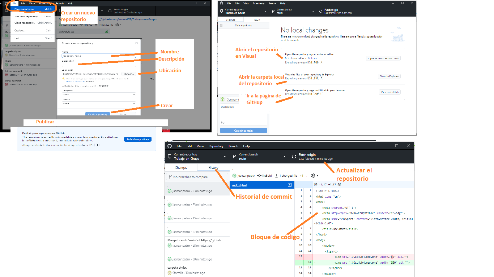

Que es GitHub
Ayuda a rastrear y gestionar los cambios realizados en un archivo o conjunto de archivos.
Permite hacer tantos cambios como necesiten sin infringir o retrasar el trabajo de sus colegas.
Comandos Git
Existe una forma de administrar las funcionalidades de GitHub
Esta forma de administrar la adherencia de archivos, la forma de guardar datos, actualizar, entre otras.
La obtenemos a través de la utilizacion de la Terminal, esta opcion nos permite utilizar las funciones mencionadas
mediante los comandos, estos los podemos definir como : una orden que se administra a la linea de programación, y nos permite
crear las modificaciones necesarias!
Puedes registrar cambios (añadirlos al Index) usando git add , en caso de querer añadir todos los archivos de cierta carpeta
puedes utulizar git add ., puedes añadir mediante esta funcioalidad todos los cambios necesarios.
Este es el primer paso en el flujo de trabajo básico. Para hacer commit a estos cambios usa
git commit -m "Commit message"
Para conocer el estado de mis cambios git status ,
Ahora el archivo esta incluído en el HEAD, pero aún no en tu repositorio remoto.
Entre otros!...
Aplicación de escritorio GitHub Desktop
GitHub Desktop es una aplicación que te habilita para interactuar con GitHub utilizando una GUI en vez de la línea de comandos o de un buscador web.
Puedes utilizar GitHub Desktop para completar la mayoría de los comandos de Git desde tu computadora de escritorio con confirmaciones visuales para los cambios.
Puedes subir, extraer y clonar repositorios remotos con GitHub Desktop y utilizar herramientas colaborativas tales como atribuir confirmaciones y crear solicitudes de extracción
En la siguiente imagen se muestra como crear un nuevo repositorio utilizando GitHub Desktop
Integrantes
- Lucas Alonzo
- Gimena Gimenez
- Juan San Pedro
- Maglis Galvan